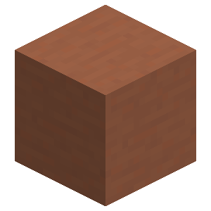
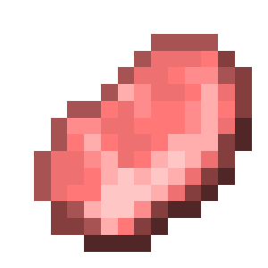
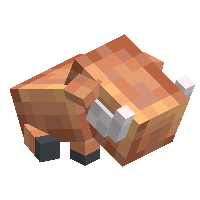
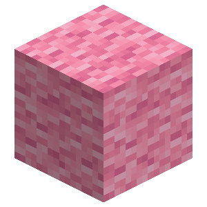
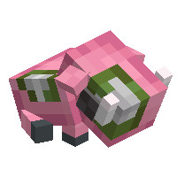

About
The hoglin and zoglin plushies are decorative blocks inspired by the hoglin mob's various forms!
Config
Set Enable Hoglin Plushie to Yes/true (default) to use them, or No/false to hide them. Both the hoglin and zoglin plushies use this option.
Crafting Recipe
Hoglin Plushie





Zoglin Plushie



Placement
When placing a hoglin and zoglin plushie, it will face the player.
Breaking
Hoglin and zoglin Plushies can be broken with any item or by hand!
Hoglin Plushie
Hoglin
Zoglin
| Renewable | Yes (Crafting) |
| Stackable | Yes (64) |
| Tool | Any tool |
| Blast Resistance | 0.2 |
| Hardness | 0.2 |
| Luminous | No |
| Transparent | No |
| Catches fire from lava | Yes |